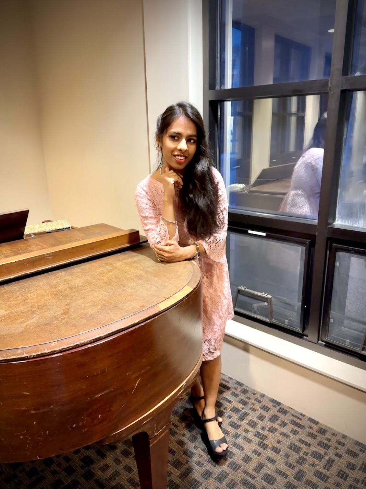

Music
Piano
Piano was one of the first things I ever learned to really focus on, and it's stayed a quiet constant since. I don't perform much these days, but sitting down to work through an old piece, or stumble through a new one, is still my favorite way to reset.